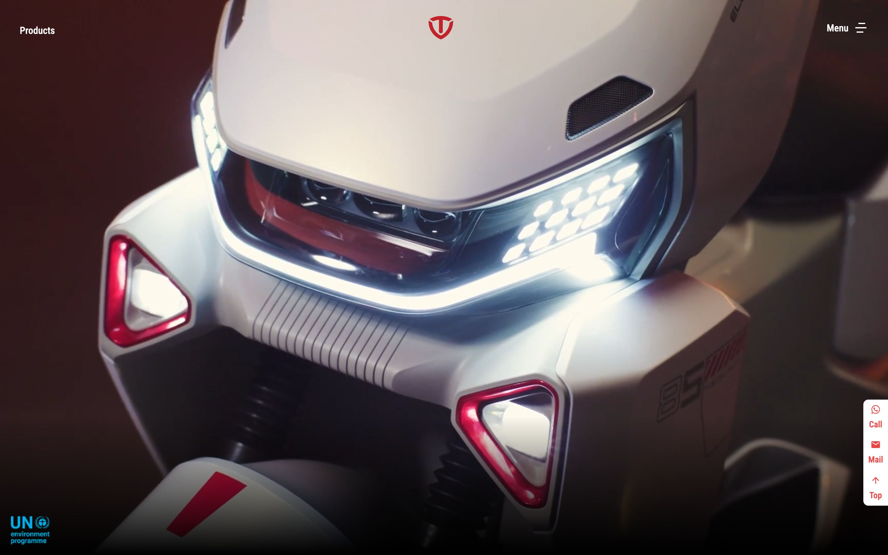
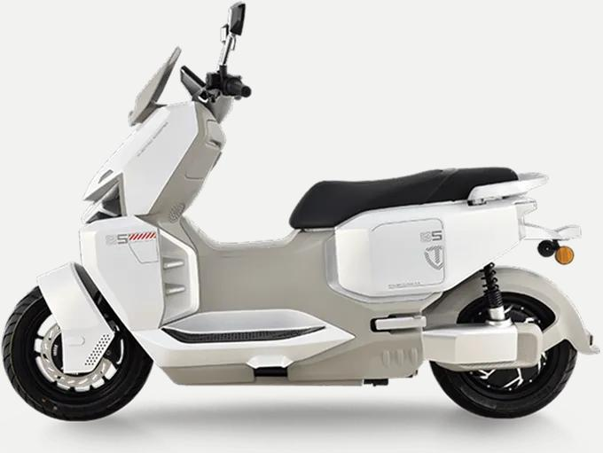
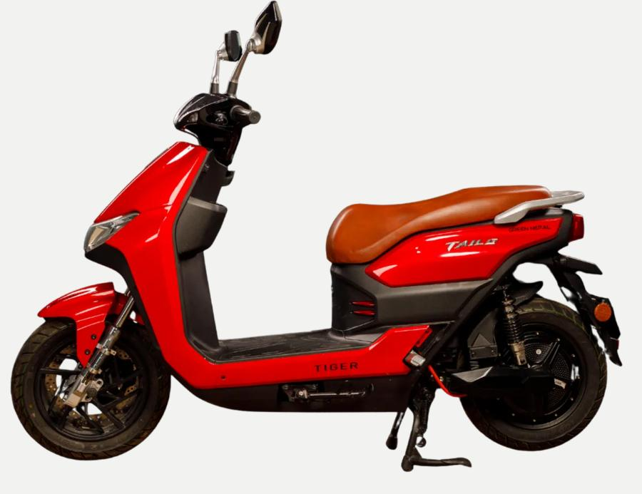
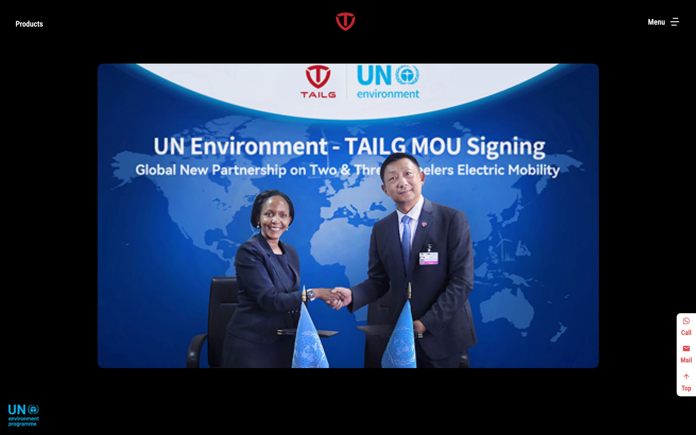
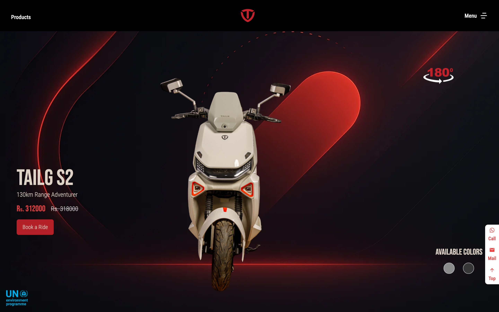
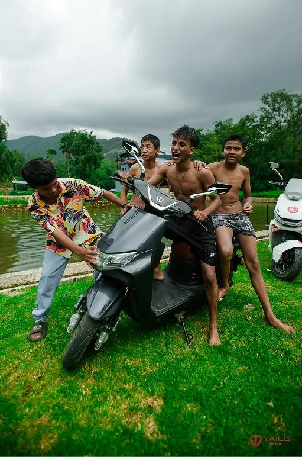
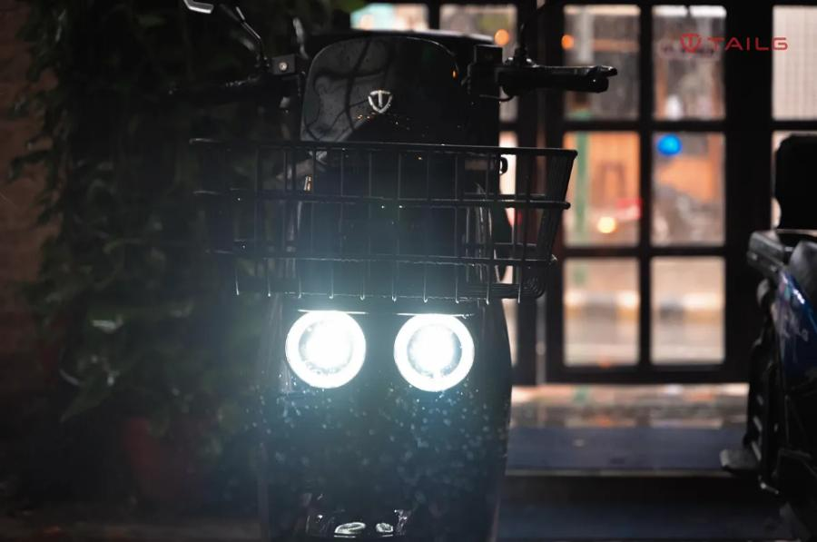

TAILG Nepal · Electric Mobility · Nepal
How Pixel Kriti turned TAILG Nepal's referral-based success into a scalable brand identity, website, and social media presence.
TAILG Nepal sells electric scooters manufactured by TAILG, a Chinese electric vehicle maker, through a network of showrooms across the country. For years, almost all of its sales came from referrals. That was a good sign, but not a scalable one. The website ran on a generic WordPress template, social media was inconsistent, and nothing tied the showrooms, the website, and the company's reputation into one identity. As more electric two-wheeler brands entered the Nepali market, that gap became harder to ignore.
Pixel Kriti was introduced to TAILG Nepal through a networking connection. The early conversation centered on the obvious gaps: an outdated website and no real brand. A closer look showed something more specific. TAILG Nepal had built genuine credibility over the years, including its manufacturing heritage, its service record, and an existing environmental partnership, but none of it had ever been organized into something a new customer could actually see and trust.
There was no account manager relaying updates back and forth on this project. TAILG Nepal worked directly with the three people actually building it: Amitesh on analytics and management, Bishal on website and design, and Muzammil on marketing, sales, and analytics. That's how Pixel Kriti works on every engagement. A small team, and you talk to the people doing the work, not someone speaking on their behalf.
Over three months, this team built a full brand identity, a new website on a platform TAILG Nepal could manage itself, aligned social media, and a CSR story built around the company's existing environmental affiliations. Sales grew after launch, and TAILG Nepal now runs its own digital presence without outside help.
Nepal's electric two-wheeler market has grown fast. Rising fuel costs and city traffic have pushed more manufacturers to bring electric scooters and motorcycles to Nepali buyers. TAILG, the parent company, is a Chinese EV manufacturer whose products reach Nepal through a dedicated local operation, TAILG Nepal.
TAILG Nepal sells through showrooms in several cities, including Kathmandu, and backs every sale with after-sales service. It's a relationship-driven business built on dealer visits and word of mouth rather than digital acquisition, with a team of roughly 15 to 20 people across showrooms and admin functions.
By the time Pixel Kriti got involved, TAILG Nepal had years of operating history and a solid product record in Nepal. What it hadn't invested in was how that history looked to someone encountering the brand for the very first time.


Pixel Kriti's introduction to TAILG Nepal came through a mutual connection rather than a direct enquiry. The team described their situation simply: sales were healthy and almost entirely driven by referrals, but the website felt dated, and nothing connected the showrooms, the website, and whatever social media activity existed. The initial ask was close to "we need a better website."
That framing made sense on the surface. It took a closer look at how the business actually operated, and how its customers actually found it, to see the website was a symptom, not the real problem.
Amitesh, who leads analytics and management at Pixel Kriti, recognized the pattern. In relationship-driven businesses, digital presence often becomes an afterthought, right up until competition increases and that afterthought turns into a real liability. He pushed to investigate further before proposing anything.
Before proposing a solution, Pixel Kriti spent time understanding how TAILG Nepal actually worked. Scooters are manufactured by TAILG in China and imported for sale in Nepal, where the local team handles distribution, showrooms, and after-sales service.
Buying a scooter is a high-consideration decision, usually made in person. A customer visits a showroom, often on a friend's recommendation, to see and test-ride a scooter before buying. Meanwhile, the website ran on WordPress, social media was inconsistent in tone and look, and nothing linked the showroom experience to the website or to social media.
The stated goal was to modernize the digital presence to keep up with a market attracting more competitors. But the deeper finding was that TAILG Nepal had something many of those new competitors didn't: a track record. That credibility was real. It just wasn't visible to anyone who hadn't already heard about the brand secondhand.
A few things were true at the outset. Nearly every sale traced back to a referral, with little sign the website or social channels were bringing in new enquiries. The site itself hadn't evolved with the business. Social media was minimal and inconsistent. And nowhere in the company's public communication was there any mention of its manufacturing heritage, its service commitments, or its environmental affiliations, despite TAILG's broader involvement in international electric-mobility initiatives.
These weren't isolated issues. They described a business succeeding despite its digital presence rather than because of it, one whose real strength, relationships and trust, had never been translated into a brand that could scale beyond word of mouth.
Understanding what these symptoms actually meant took longer than spotting them. Every conversation about how recent customers had found TAILG Nepal led back to a referral or a showroom visit, rarely the website or social media. On its own, that isn't unusual for this kind of business.
What stood out was everything the company had built over the years without ever communicating it: a manufacturing history stretching back decades, service commitments like extended warranties that competitors couldn't match, a genuine connection to international e-mobility efforts through TAILG's affiliation with the UN Environment Programme, and a growing base of customers happy to refer friends and family.
None of this showed up anywhere in the brand's public face. This wasn't a business short on substance. It was a business whose substance had never been organized into something a stranger, someone without a personal referral, could actually encounter and evaluate.
Word of mouth worked because it passed trust person to person. Nothing in the digital presence did the same job. A customer who found TAILG Nepal through a search or an ad had no way to judge whether the brand was reliable or even legitimate.
A website redesign alone wouldn't have fixed that. A modern-looking site sitting on top of an undefined brand and an uncommunicated track record would still give a first-time visitor no more reason to trust it than before. The real gap wasn't the website's age. It was the absence of anything for a new website, or a social page, or an ad, to actually carry.
Pixel Kriti considered three realistic paths.
Paid acquisition first. Running paid campaigns to drive enquiries would have delivered a fast, visible lift. But sending strangers to a website and social presence that gave them little reason to trust an unfamiliar brand over a competitor's risked weak conversion and wasted spend, especially for a purchase this considered.
Website redesign only. Rebuilding the existing site with a more current design was faster and simpler, and it would have addressed the most visible complaint directly. Its limitation was treating the website as an isolated fix, when a customer might just as easily meet the brand through a showroom, a social post, or a referral conversation first. A new website alone wouldn't make those touchpoints consistent with each other.
Identity first, then everything else. The third option, and the one Pixel Kriti recommended, was to define the brand's visual and verbal identity first, then rebuild the website on a platform TAILG Nepal could maintain itself, bring social media into the same identity, and give the business a way to communicate the credibility it had already earned, environmental affiliations included. It took longer to show results than the other two paths, but it addressed the real gap. The business didn't need more attention. It already had organic demand. What it needed was a consistent way to meet that attention once it arrived.
The identity work, led by Bishal, who handles website and design at Pixel Kriti, started by reconciling two things the brand needed to hold at once: the credibility of an established manufacturer with decades of history, and the approachability of a locally run, service-oriented business Nepali customers already trusted enough to recommend.
The visual identity balanced heritage with modernity. That meant a logo system that respected the parent brand's manufacturing authority while keeping the local operation feeling accessible, a color palette suggesting energy and environmental consciousness, clean and trustworthy typography, and photography guidelines built around product quality and the in-showroom experience.
The messaging rested on three ideas: reliability, backed by decades of manufacturing experience and proven products, service, through after-sales support and warranty terms competitors weren't matching, and sustainability, grounded in the real environmental benefits of electric mobility. The tone stayed informative rather than salesy, which matches how EV buyers actually shop. They compare specs, read about reliability, and look for proof the company will stand behind its product.
The sustainability story wasn't invented for the rebrand. It came from something TAILG already had: its participation in international electric-mobility efforts through the UN Environment Programme's e-mobility initiative. That gave TAILG Nepal a genuine sustainability angle rather than a manufactured one, and it simply hadn't been shared with customers before. The story was worked into the website, social content, and showroom materials, covering TAILG's role in reducing urban air pollution, its alignment with international environmental standards, and the practical upside of electric scooters: lower running costs, fewer emissions, quieter streets. It positioned TAILG Nepal as more than a scooter seller. It made the brand part of Nepal's shift toward sustainable transport.

The site was rebuilt on Webflow rather than the old WordPress setup, chosen specifically because it balances design flexibility with ease of use, letting TAILG Nepal's team make updates without ongoing developer support. The point wasn't just to launch a better-looking site. It was to make sure the business could keep using it well after the engagement ended.
The new site includes a clean, modern design reflecting the brand identity, a product catalog structure that makes it simple to add new scooter models, a showroom locator, clear service and warranty information, a sustainability page explaining TAILG's environmental commitments, and easy content management so the team can update pricing, add promotions, and publish news on their own.
The content itself was built around the questions EV buyers actually ask: what models are available, what do they cost, what's the range and battery life, where can I test ride one, what warranty and after-sales support comes with it, and why choose electric in the first place. Answering these clearly made it easy for a first-time visitor to size up TAILG Nepal against any competitor.

Webflow handles the CMS, letting TAILG Nepal update products, publish blog posts, and maintain a professional site without developer help. Google Tag Manager was added for analytics, giving the team visibility into which products draw the most interest, how visitors find the site, where people drop off before enquiring, and which channels actually work. Facebook and TikTok, the company's existing social channels, were brought in line with the new identity by Muzammil, who runs marketing, sales, and analytics at Pixel Kriti, so a customer meeting the brand on social media sees the same tone and look as on the website or in a showroom, rather than starting the trust-building process over again.
Every choice here was made to keep ongoing technical overhead low. Webflow removed the need to manage custom hosting. Tag Manager gave analytics without developer involvement. Social alignment could be maintained by the marketing team on its own. Once Pixel Kriti's engagement ended, TAILG Nepal could run all of it independently.
The first month covered discovery and identity work: stakeholder interviews, competitive research across Nepal's EV brands, the visual identity system, the tone-of-voice framework, and the sustainability narrative built on TAILG's existing environmental ties.
The second month covered the website itself, from UX and UI design through front-end and back-end development on Webflow, content population across product and information pages, Tag Manager integration, and social media templates for consistent posting going forward.
The third month covered launch and handover: testing across devices and browsers, aligning and scheduling social content, training TAILG Nepal's team on the CMS, and handing over every asset and piece of documentation.
A few adjustments came up along the way. The old WordPress site had scattered product information that needed a proper content inventory and migration plan to avoid losing anything. Showroom materials needed updated guidelines and templates so every dealer location matched the new identity. And the team needed a clear content calendar and template system to keep social media consistent going forward.
Before the rebrand, TAILG Nepal had no consistent identity across its channels, a generic website that undersold its credibility, thin and inconsistent social media, no visible mention of its manufacturing heritage or environmental record, and no real way to measure what its marketing was doing.
After the rebrand, the brand carries the same identity across its website and social channels, runs on a platform the team can manage on its own, presents itself with the kind of polish that builds trust with first-time visitors, and clearly communicates its heritage, service commitments, and environmental affiliations, all backed by analytics the team can actually use.
The business results followed. Sales grew after the relaunch, with the new website and identity contributing to better conversion. Social engagement improved as content became more consistent. The team gained real independence in managing its own digital presence. And the credibility TAILG Nepal had spent years building finally reached people outside its existing referral network.


Just as important as what got built was what didn't. An online ordering or e-commerce system was set aside, since TAILG Nepal's sales depend on in-person test rides and showroom relationships, which is how a purchase like this is typically made in this market. Building that infrastructure before the brand had a coherent identity would have added complexity without solving the actual problem.
A paid advertising push wasn't the first move either. Spending on acquisition before the brand had a clear identity to receive that attention would have been premature. A customer loyalty platform wasn't pursued, since the existing warranty and service commitments already did more for retention than a rewards program would. And a dedicated mobile app was considered and dropped, since a strong website and consistent social presence covered everything the business actually needed without adding development overhead nobody was asking for.
TAILG Nepal had real demand, but it was limited to people already connected to the brand. Scaling meant building a way to pass that trust to strangers, which is exactly what a brand system does.
Fixing the site alone tends to produce a nicer-looking symptom rather than a solved problem. Credibility a business has already earned is often sitting there uncommunicated, and surfacing it is usually more valuable than inventing a new story from scratch.
Especially once competitors with sharper marketing show up. And distribution channels amplify whatever identity already exists, which is why defining the brand had to come before spending on ads or social growth. Do it the other way around and you just amplify the inconsistency.
A business that manufactures abroad and sells locally needs a brand that can hold both: the credibility of the parent manufacturer and the trust that comes from local service and relationships.
E-commerce and paid acquisition can wait until there's a clear identity behind them. And a content platform the client can run independently matters more after launch than during it, since the relationship with a business's digital presence outlasts the project that built it.
What started as a request that sounded like a web design project turned into something else: organizing credibility TAILG Nepal had already earned, its manufacturing heritage, its service record, its environmental ties, into something a stranger to the brand could find and trust without needing a personal referral first.
The real lesson wasn't about design. It was about sequence. Identity had to come before distribution. Spending on social media or ads before the identity existed would have amplified confusion rather than resolved it.
TAILG Nepal's shift from a word-of-mouth business to a properly branded one shows what's possible when you organize what a company already has, rather than inventing something new. Today, TAILG Nepal has a brand and a website that actually communicate its heritage, service, and environmental values. Sales have grown, and the team runs its own digital presence without outside help. Word of mouth still matters. It's just no longer the only way people find and trust the business.
Pixel Kriti is a technology and consultancy agency helping businesses across Nepal, India, and Pakistan solve their core operational challenges through thoughtful branding, web design, and digital strategy. We don't just build websites. We solve business problems.
Our team combines expertise in business analytics and AI/ML, website design and development, and marketing, sales, and digital strategy. Amitesh leads analytics and management, focused on understanding business problems and building data-driven solutions. Bishal leads website and design, taking projects from brand identity through full-stack development. Muzammil leads marketing, sales, and analytics, specializing in go-to-market strategy, SEO, and performance tracking.
Ready to turn your business's reputation into a brand people can find and trust? Let's talk: info@pixelkriti.com · pixelkriti.com